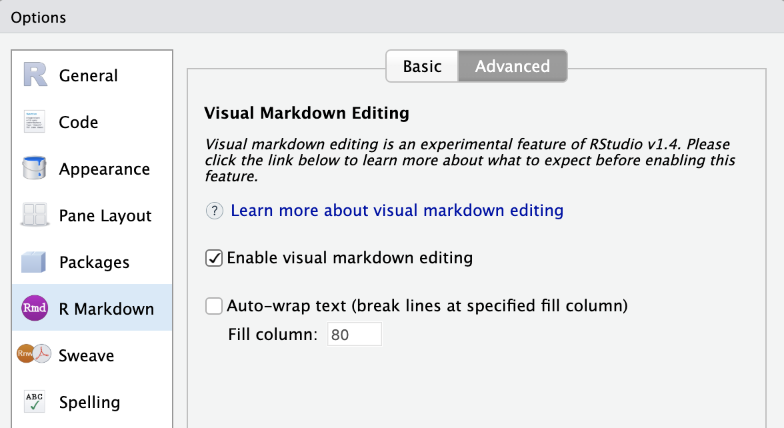
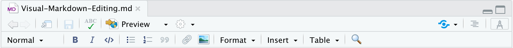
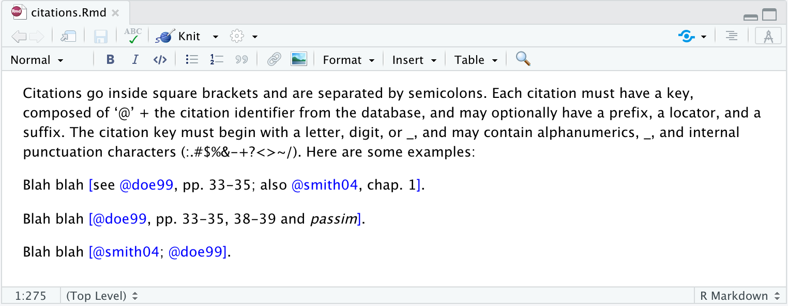

Visual Markdown Editing
J.J. Allaire
April 2020
Overview
RStudio v1.4 includes an experimental visual markdown editing mode. Users of R Markdown that write longer-form documents often use tools like Typora (or sometimes even Google Docs) for composition. Visual editing mode provides an alternative that is tightly integrated with RStudio and which natively reads and writes Pandoc markdown.

You can easily switch between source and visual editing modes, using whichever mode works best for the different stages of work on an R Markdown document.
This mode is currently only useful for composition (code chunks are not executable). We expect this to change in future versions of RStudio.
Getting Started
Visual markdown editing is currently only available in the daily build of RStudio v1.4. You can download the most recent daily build here: https://dailies.rstudio.com.
Visual markdown editing is not available by default. To enable it, use the R Markdown tab of RStudio preferences:

Once you’ve enabled visual editing, you can switch between source and visual mode using the button at the top-right of the document toolbar:

Once you’ve done this, the editor will switch to visual mode and an editing toolbar with various formatting commands will appear. There is also a keyboard shortcut (Ctrl+Shift+F8) that can be used to switch modes.
Editing Commands
Visual editing mode includes conventional word-processor style gestures for headings, formatting, etc. on the editing toolbar:

In addition to using the editing toolbar, you can also use markdown syntax directly. When the editor sees markdown shortcuts it automatically applies the associated formatting. Note that if you didn’t intend this, you can use backspace to revert the applied formatting.
Shortcuts
There are also keyboard shortcuts available for several commands. Here are the markdown and keyboard shortcuts currently supported (note that you should substitute Cmd for Ctrl on Mac systems):
| Formatting | Markdown Shortcut | Keyboard Shortcut |
|---|---|---|
| Bold | **bold** | Ctrl+B |
| Italic | *italic* | Ctrl+I |
| Code | `code` | Ctrl+D |
| Strikeout | ~~strike~~ | |
| Subscript | ~sub~ | |
| Superscript | ^super^ | |
| Heading | ## | |
| Blockquote | > | |
| Code Block | ``` | |
| Horizontal Rule | *** | Ctrl+_ |
| Footnote | Shift+Ctrl+F7 | |
| Bullet List | - | |
| Ordered List | 1. | |
| List Check | [x] | |
| Definition Term | : | |
| Link | [text](href) or <href> |
Ctrl+K |
| Image | Shift+Ctrl+I | |
| R Code Chunk | Alt+Ctrl+I | |
| Table | Alt+Ctrl+T | |
| Edit Attributes | F4 |
Typography
Most markdown formats support smart typography, which causes straight quotes to be interpreted as curly quotes, – as en-dashes, — as em-dashes, and … as ellipses. Visual mode supports these same transformations (so when you type — it becomes an em-dash). If you didn’t intend for this transformation to occur just hit backspace and it will be reverted.
Math and Citations
TeX math and citations are authored using standard Pandoc markdown syntax (the editor will automatically recognize the syntax and create the appropriate constructs). For example, here’s some inline and display math:

Here are some citations:

You can also insert math, citations, and footnotes using commands on the Insert menu.
Raw Markup
You can include raw TeX when authoring in visual mode. The raw markup will be automatically recognized and syntax highlighted For example:

You can also include inline and block raw content of any output format supported by Pandoc (e.g. html, rtf or openxml) using the commands on the Format -> Raw menu.
Markdown Conversion
Visual editing mode generates markdown using Pandoc. This means that in some cases your markdown will be rewritten to conform to standard Pandoc idioms. For example, Pandoc writes 3 spaces after list bullets, and automatically escapes characters that might be used for markdown syntax.
While this might be bothersome at first, if you decide that visual editing mode is useful for your workflow it’s probably best to just adapt to writing your own markdown the same way that Pandoc does. If any of Pandoc’s idioms are particularly troublesome, let us know and we’ll see if we can add an option to override the default behavior.
Markdown Variants
Visual editing mode can author all of the markdown variants supported by Pandoc. By default, features associated with standard Pandoc markdown are enabled. You can change this behavior by including an Emacs-style magic comment in your markdown document. For example, to specify that you’d like to create GitHub Flavored Markdown (Pandoc’s “gfm” variant), add this comment:
<!-- -*- mode: gfm -*- --> Note that for R Markdown (Rmd) files this comment should be located immediately after the YAML metadata block at the top of the document.
You can also specify that particular extensions be enabled or disabled. For example, to specify GitHub Flavored Markdown with additional support for TeX math and raw Tex, you would use this comment:
<!-- -*- mode: gfm; extensions: +tex_math_dollars+raw_tex -*- --> Alternatively, to specify standard Pandoc markdown without TeX math and raw TeX, you would use this comment (note the minus sign before the disabled extensions):
<!-- -*- mode: markdown; extensions: -tex_math_dollars-raw_tex -*- --> You can read more about Pandoc variants and extensions in the Pandoc Markdown documentation.
Navigation
Document Outline
The document outline enables you to quickly navigate between sections of larger documents. An outline item is included for each heading within the document. You can make the outline visible using the outline button next to the visual mode button:

Find/Replace
You can find and replace text within visual mode using the Find button located at the far right of the visual editing toolbar:

Note that Find/Replace will only locate matches within normal text (code blocks are not searched).
Line Wrapping
By default, the visual editor writes Markdown with no line wrapping (paragraphs all occupy a single line). This matches the behavior of markdown source editing mode within RStudio.
If however you prefer to have paragraphs wrapped at a particular column (e.g. 72 or 80). You can set an option to this effect within the R Markdown preferences pane where visual mode is enabled. You can also set this behavior on a per-document basis by including a fill-column variable within an Emacs-style magic comment. For example:
<!-- -*- mode: markdown; fill-column: 72 -*- --> Note that there are some disadvantages to setting a fill-column. First, editing paragraphs in source mode will be less convenient (because line wrapping will need to done manually). Second, tables with many explicitly sized columns (more than 10 or so) may be written by Pandoc as HTML rather than markdown.
Known Limitations
There are a handful of Pandoc markdown extensions not currently supported by visual editing. These are infrequently used extensions so in all likelihood won’t affect documents you edit, but are still worth noting.
| Extension | Example | Behavior |
|---|---|---|
| Inlne footnotes | ^[inline footnote] | Converted to numeric footnote. |
| Footnote identifiers | [^longnote] | Converted to numeric footnote. |
| Example lists | (@) First example | Read/written as ordinary numbered lists. |
| Auto-list numbers | #. First item | Read/written as ordinary numbered lists. |
| Reference links | This is a [link] | Converted to ordinary links. |
| Pandoc title block | % My Title | Ignored (and dropped from document). |
In addition, the various MultiMarkdown extensions to Pandoc are not supported (note that these extensions are disabled by default in Pandoc markdown). MultiMarkdown title blocks are ignored and dropped, and MultiMarkdown link attributes and header identifiers are read and converted to Pandoc markdown equivalents.